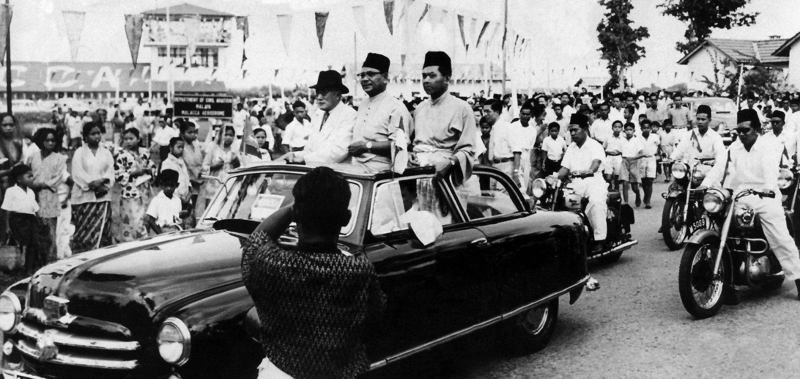

Kesultanan Melaka berkembang
Posisi Melaka di jalur perdagangan membantu tumbuhnya pusat niaga dan kebudayaan yang menghubungkan berbagai wilayah Asia.
Perjalanan budaya Malaysia terbentuk melalui jalur perdagangan, kesultanan, kolonialisme, kemerdekaan, dan perjumpaan masyarakat yang beragam.

Garis waktu ini dibuat sebagai pengantar. Sejarah Malaysia sangat luas dan melibatkan banyak wilayah serta komunitas.
Posisi Melaka di jalur perdagangan membantu tumbuhnya pusat niaga dan kebudayaan yang menghubungkan berbagai wilayah Asia.
Melaka dan wilayah Semenanjung mengalami pengaruh Portugis, Belanda, dan Inggris, sementara Sabah dan Sarawak memiliki lintasan sejarah regionalnya sendiri.
Kemerdekaan menjadi tonggak penting dalam pembentukan pemerintahan nasional dan identitas masyarakat pascakolonial.
Negara Malaysia terbentuk melalui penggabungan Malaya, Sabah, Sarawak, dan Singapura. Singapura kemudian berpisah pada 1965.
Tradisi lokal, perkembangan kota, pendidikan, media, dan teknologi terus membentuk cara masyarakat menjaga sekaligus menafsirkan budaya.

Arsitektur rumah, ragam pakaian, pola tenun, seni pertunjukan, bahasa, dan makanan menyimpan jejak pertukaran antarmasyarakat.
Website ini menggunakan ringkasan edukatif. Untuk penelitian akademik, periksa kembali sumber primer, arsip, dan publikasi sejarah yang lebih mendalam.
Fitur ini memfilter daftar halaman menggunakan event keyboard dan perulangan JavaScript.
Ketik minimal 2 karakter.